#install.packages("igraph")
#install.packages("RColorBrewer")
library(igraph)
library(RColorBrewer)Select Examples from Moody & Light (2020) in R
Building Moody and Light (2020) Style Graphs
Here we walk through a series of examples from the Moody and Light (2020) chapter on visualization. Most figures in that chapter were developed in Pajek and here we will work with similar data and figures to create similar graphs.
First we need to load relevant packages. These will get us started.
We will begin by showing examples similar to Figure 18.3: A series of figures showing distance based layouts.
We will read some high school data similar to their data using read_graph as the data were stored as a pajek file
sch4 <- read_graph("data/sch4.net", format="pajek") First we will also add some node attributes from a .txt file before plotting. We can use set_vertex_attr for to make that happen.
#create table of node attributes...Note that Header is important here as there are column labels
sch4_attr <- read.table("data/sch4_attr.txt", header=TRUE)
#set attributes stores these attributes in the igraph object
sch4 <- set_vertex_attr(sch4, "grade", index = V(sch4), sch4_attr$grade)
sch4 <- set_vertex_attr(sch4, "race", index = V(sch4), sch4_attr$race)
#this makes a random variable for popularity
popularity <- runif(291, min = 1, max = 10)
#this stores that random varialbe as an attribute
V(sch4)$popularity <- popularity
#found an error before by looking at the grades table
table(V(sch4)$grade)
0 7 8 9 10 11 12
1 43 41 48 53 60 45 #so let's delete that weird one using delete.vertices
sch4 <- delete.vertices(sch4, V(sch4)$grade==0)Warning: `delete.vertices()` was deprecated in igraph 2.0.0.
ℹ Please use `delete_vertices()` instead.#and plot
plot(sch4)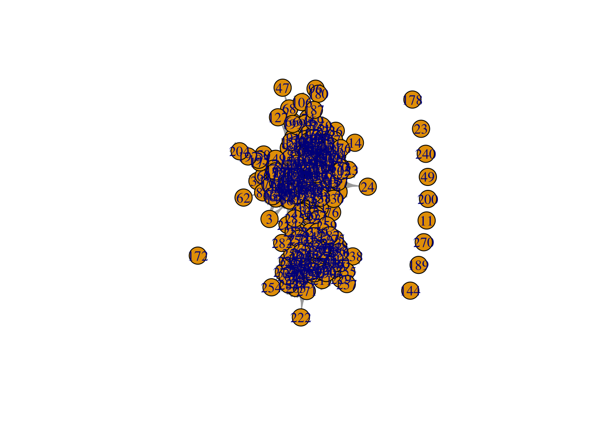
We can see that this is not a great image. There’s a hairball. While isolates are important for understanding the overall network - remember that they are certainly a part of this social world. We are mostly interested in the connections within this school and so will focus on those who have nominated at least one friend. Recall that degree is the number of nodes that an ego is connected to so is we delete nodes with degree=0 we will remove isolates. This will plot the largest connected component in this graph.
Getting rid of the vertex labels by setting vertex.label=NA may also help. These labels for this graph are ID numbers and therefore not informative.
#identify isolates
isolates <- which(degree(sch4)==0)
#delete isolates
sch4.comp <- delete.vertices(sch4, isolates)
#plot while also getting rid fo vertex labels.
plot(sch4.comp, vertex.label=NA)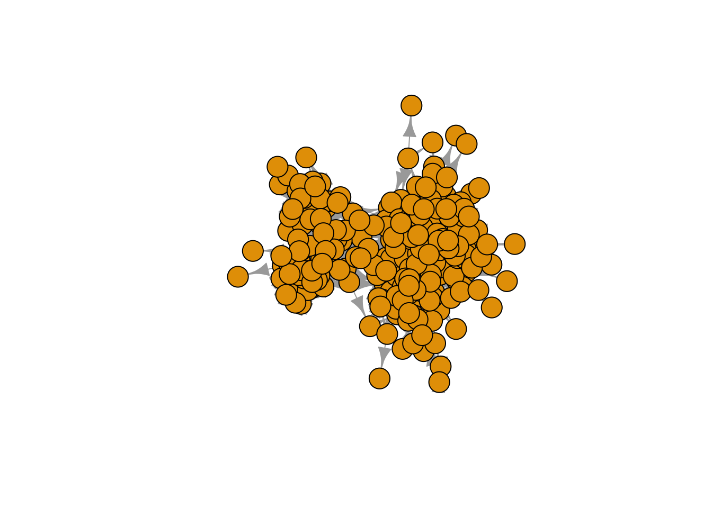
Better, but we can still make things clearer.
Let’s make several adjustments:
- Make the node size smaller using
vertex.size=() - Reduce the edge width by a multiplier (1/2) using
edge.width=() - Reduce the size of the arrows with
edge.arrow.size=()
plot(sch4.comp, vertex.label=NA, vertex.size=4, edge.width=E(sch4.comp)$weight/2, edge.arrow.size = 0.1)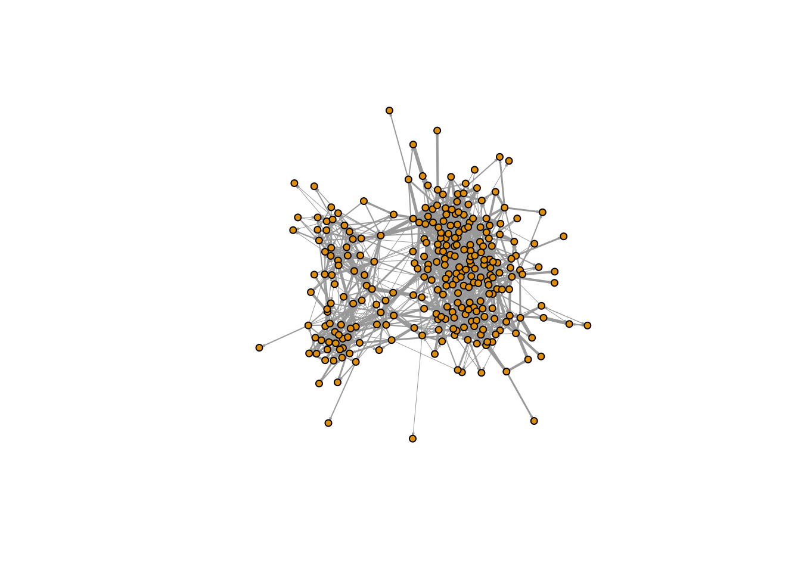
Now we are ready to check out some layouts like in figure 18.3.
Layout: Multidimensional Scaling
Multidimenional scaling is a popular data reduction techinque in the social sciences (both networks and not). This is an “explicit dimenisonal reduction” technique that finds a small number of dimensions that capture the bulk of the variannce in a data matrix or array.
multidim <- layout_with_mds(sch4.comp)
plot(sch4.comp, vertex.label=NA, vertex.size=4, edge.width=E(sch4.comp)$weight/2, edge.arrow.size = 0.1, layout=multidim)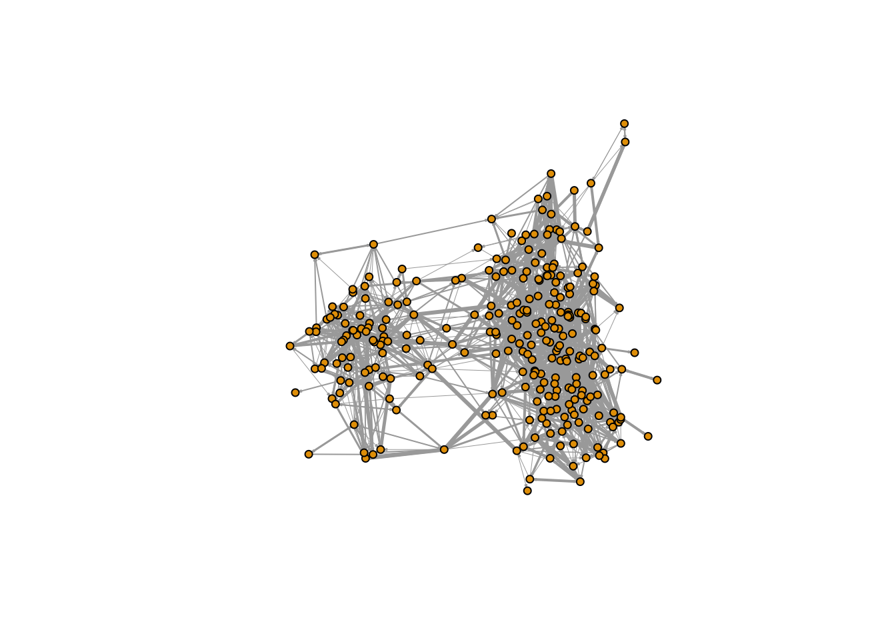
Layout: Kamada-Kawai
Kamada-Kawai is a force-directed layout or a “spring-embedding routine” that sees graph space as a “field of forcfes” where nodes attract to neighbors and repel from those with whom they are disconnected. Kamada-Kawai is useful on smaller graphs as it avoids drawing nodes in the exact same spot.
kk <- layout_with_kk(sch4.comp)
plot(sch4.comp, vertex.label=NA, vertex.size=4, edge.width=E(sch4.comp)$weight/2, edge.arrow.size = 0.1, layout=kk)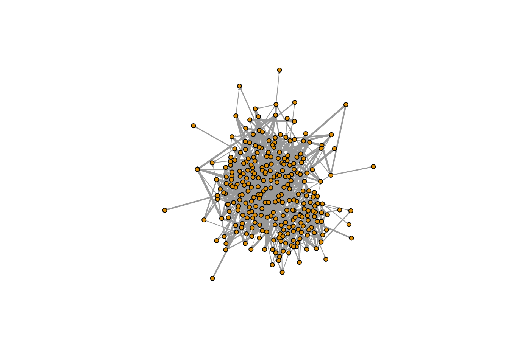
Layout: Fruchterman-Reingold
Fruchterman-Reingold is a force-directed layout that does not avoid overlap and therefore is good when hoping to leverage density or when graphs are pretty large.
fr <- layout_with_fr(sch4.comp)
plot(sch4.comp, vertex.label=NA, vertex.size=4, edge.width=E(sch4.comp)$weight/2, edge.arrow.size = 0.1, layout=fr)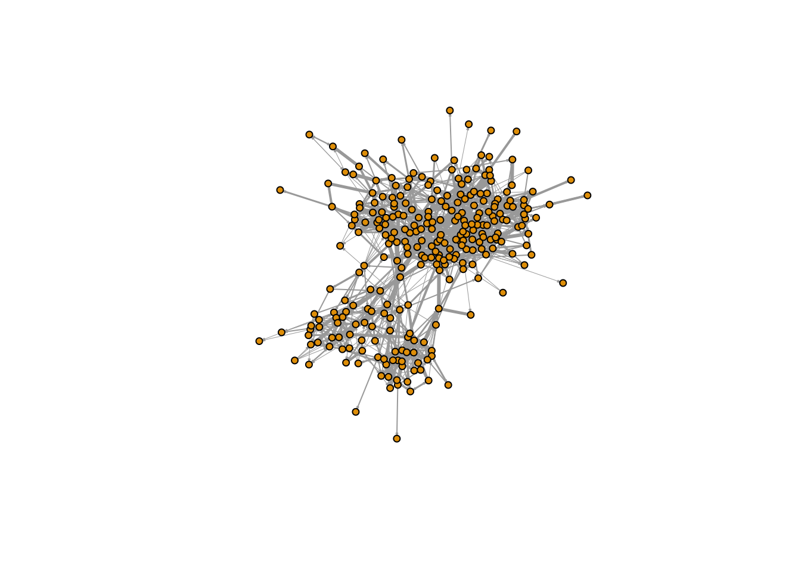
Layout: DrL
DrL is a force-directed layout that works efficiently on very large graphs (n>1000)
drl <- layout_with_drl(sch4.comp)
plot(sch4.comp, vertex.label=NA, vertex.size=4, edge.width=E(sch4.comp)$weight/2, edge.arrow.size = 0.1, layout=drl)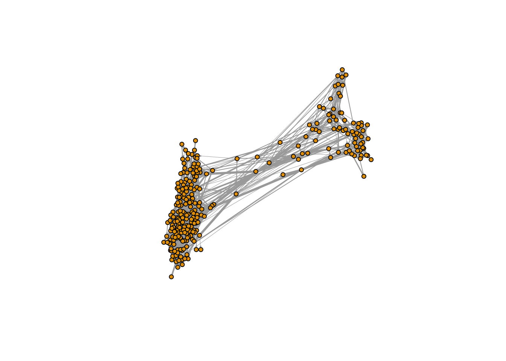
We can see that this is quite aggressive and really pushing the “strangers” apart. In this case, we will stick with the default fruchterman-reingold.
Intentional Embellishments of Graphs (see Figure 18.5)
We saw the default school layout several times and have already adjusted the edge weight. We can also color the vertices by an attribute. Moody and Light (2020) use race. Here, grade is more salient so we use that by setting vertex.color according to the attribute grade. We add 1 to avoid any indexing problems. We will show an additional way to set the node colors below.
plot(sch4.comp, vertex.label=NA, vertex.color=V(sch4.comp)$grade+1, edge.width=E(sch4.comp)$weight/2, vertex.size=4, edge.arrow.size = 0.1)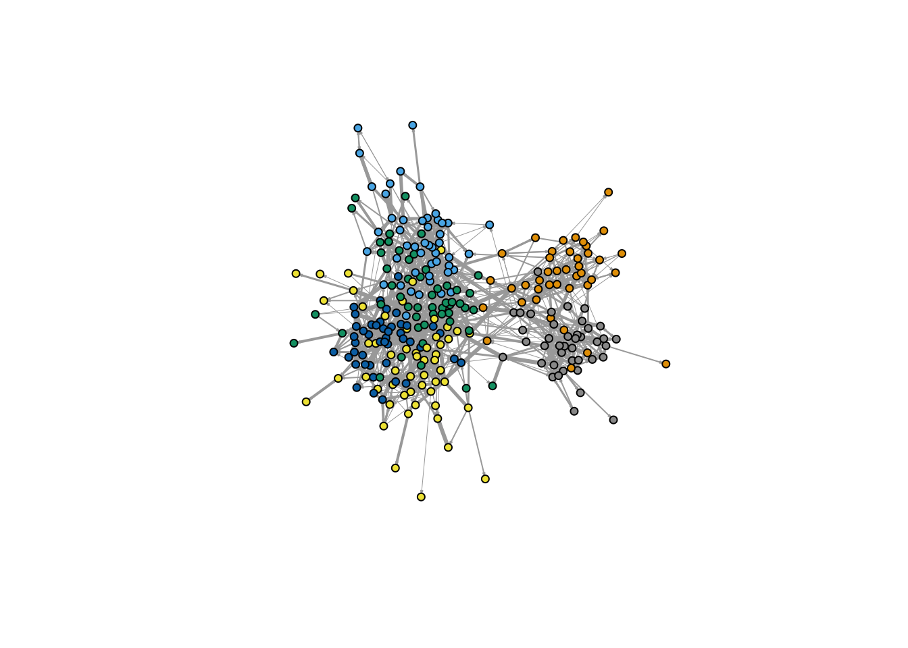
We can also adjust the size of the nodes based on an attribute using vertex.size= . Here, we use the random popularity variable constructed above.
plot(sch4.comp, vertex.label=NA, vertex.color=V(sch4.comp)$grade+1, edge.width=E(sch4.comp)$weight/2,
vertex.size=V(sch4.comp)$popularity*.75, edge.arrow.size = 0.1)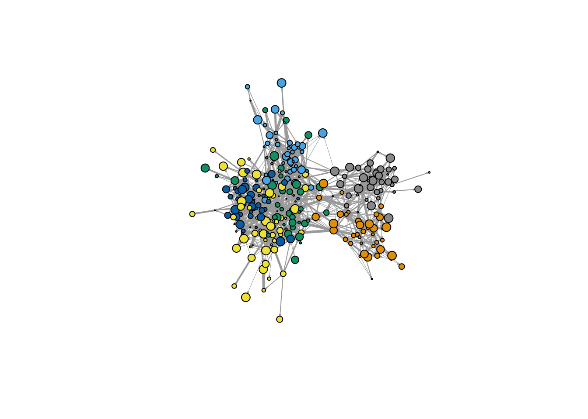
We may also want to emphasize within group connections by “rewarding” within group ties. We can do this by imposing a layout rule that weighs within group ties more heavily than out-group ties.
We also introduce a few other ideas here.
- We use the package brewer.pal function from
RColorBrewerto prettify the graph by connecting to grade. - We also use the alpha= in the adjustcolor function to adjust the opacity of nodes.
- We also add a legend.
#create a copy graph
G_Grouped = sch4.comp
#set edge weights to 1
E(G_Grouped)$weight = 1
# Add edges with high weight between all nodes in the same group
for(i in unique(V(sch4.comp)$grade)) {
GroupV = which(V(sch4.comp)$grade == i)
G_Grouped = add_edges(G_Grouped, combn(GroupV, 2), attr=list(weight=1.5))
}
## Now create a layout based on G_Grouped
set.seed(567)
LO = layout_with_fr(G_Grouped)
#create a pallete
pal <- brewer.pal(6, "Accent")
#Connect the pallete to the grades by making the grade attribute a factor
vertex.col <- (pal[as.numeric(as.factor(vertex_attr(sch4.comp, "grade")))])
#plot the graph and note that we set the opacity of the nodes to .5 using alpha=.5.
plot(sch4.comp, vertex.label=NA, vertex.color=adjustcolor(vertex.col, alpha=.5), edge.width=E(sch4.comp)$weight/2,
vertex.size=V(sch4.comp)$popularity*.75, edge.arrow.size = 0.1, layout=LO)
#add a legend
legend("topleft", title="Grade", bty = "n",
legend=levels(as.factor(V(sch4.comp)$grade)),
fill=pal, border=NA)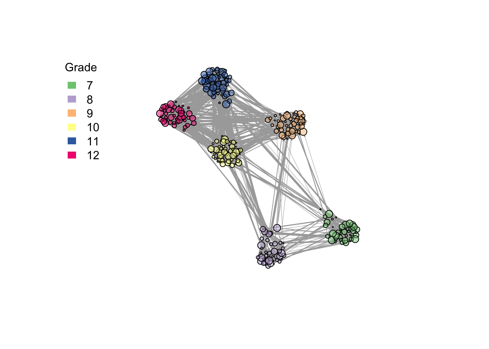
Note that this is a particularly pronounced example of the heuristic side of network visualization and you will likely want to avoid running any statistics say based on euclidean distance on this network visualization.
Big Data: Contour Sociograms
There are several different ways to develop meaningful images of very large networks. One way is to leverage the fact that some forced directed algorithms stack nodes on top of one another. This translates into dense regions of connected nodes and the spaces in between them. Another way is to reduce edges to the major “thoroughfares” and keep the edges connected to them to locate the “backbone” of the graph.
The first strategy requires the ggplot2 package and the second requires the disparityfilter package, so we should load those up.
#install.packages("ggplot2")
#install.packages("disparityfilter")
library(ggplot2)
library(disparityfilter)So, I’m going to use a similar network of overlapping papers to Moody and Light (2020) Figure 18.6. We are going to try to locate dense regions in this graph.
#This is a network of overlapping papers that I read into a table as an edgelist
#due to some funky in read.graph(x, format="pajek").
pap.df <- read.table("data/papsim_edgelist.txt")
#make igraph object
pap.g <- graph_from_data_frame(pap.df)
pap.gIGRAPH 14ad1dc DN-- 38615 590436 --
+ attr: name (v/c), V3 (e/n)
+ edges from 14ad1dc (vertex names):
[1] 1->929 1->1613 1->3758 1->6658 1->11269 1->22774 1->38556 1->38597
[9] 2->4121 2->12103 2->15409 2->22564 2->24251 2->24686 2->25483 2->30301
[17] 3->1987 3->1989 3->2097 3->4684 3->6470 3->7968 3->11785 3->37228
[25] 4->1042 4->8987 4->9020 4->12002 4->12045 4->17933 4->19451 4->21388
[33] 5->689 5->4490 5->11262 5->18576 5->21111 5->26551 5->37325 5->37892
[41] 6->278 6->3250 6->9903 6->10452 6->16505 6->21031 6->36307 6->38319
[49] 7->5130 7->10241 7->11147 7->26628 7->26737 7->37218 7->37391 7->38016
[57] 8->925 8->6881 8->8244 8->15922 8->20715 8->22658 8->25375 8->31606
+ ... omitted several edgespap_fg <- layout_with_fr(pap.g)
We can see that this is a dense graph (e.g. a “hairball”) and it is hard to make much out of it. We can leverage how the fruchterman reingold algorithm stacks strongly connected nodes as indication of densely connected regions of the graph. The layout algoritm consists of coordinates for the layout and so we save those and then use the stat_density_2d function of ggplot to place a kind of 2d skin over the network.
#png("fg_net.png", 600, 600)
#plot.igraph(pap.g, layout=pap_fg, vertex.label=NA, vertex.size=2, edge.arrow.size = 0.1, edge.color=NA)
#title("FG Layout Papers",cex.main=1,col.main="blue")
#dev.off()
#We can pull out the coordinates now from the layout.
fg_coords <- as.data.frame(pap_fg)
#Now we can plot the density
fg_contour <- ggplot(fg_coords, aes(x=V1, y=V2)) +
stat_density_2d(aes(fill=..level..), geom="polygon")
fg_contourWarning: The dot-dot notation (`..level..`) was deprecated in ggplot2 3.4.0.
ℹ Please use `after_stat(level)` instead.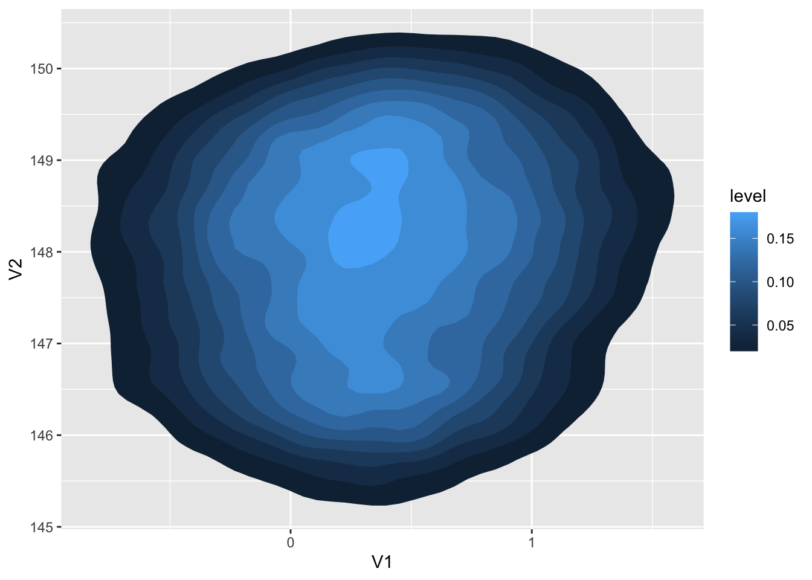
We can see two big regions in this graph and could dig deeper into those regions to see what is going on. We can also see how this works given an alogrithm that more aggressively tries to model structure in dense graphs, like the DrL layout.
#Now we can test against alternative drl layout
pap_drl <- layout_with_drl(pap.g, dim=2)
#png("drl_net.png", 600, 600)
#plot.igraph(pap.g, layout=pap_drl, vertex.label=NA, vertex.size=2, edge.arrow.size = 0.1, edge.color=NA)
#title("Drl Layout Papers",cex.main=1,col.main="blue")
#dev.off()
We can see somewhat of a structure here and can imagine perhaps locating communities and visualizing that way. But, let’s see how the contour sociogram performs.
drl_coords <- as.data.frame(pap_drl)
drl_contour <- ggplot(drl_coords, aes(x=V1, y=V2)) +
stat_density_2d(aes(fill=..level..), geom="polygon") +
scale_x_continuous(expand = c(0, 0)) +
scale_y_continuous(expand = c(0, 0)) +
theme(
legend.position='none'
)
drl_contour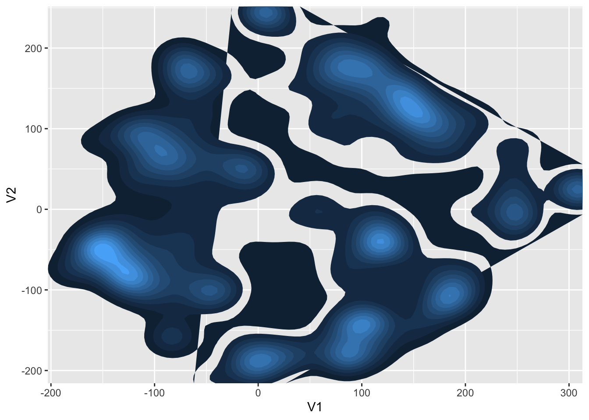
Not sure what to make of this, but we could dig deeper to see what is going on. These two graphs provide a good example of the heuristic side of visualization. Different choices, lead to different figures. We have to be aware of this characteristics and make sure to balance “realism” with our research questions.
Big Data: Skeleton Projections
First, threshhold. Using data on coauthorship on COVID-19 papers (see adams, Light, and Theis 2020), we can use threshold data to remove less connected nodes. We can imnagine that being connected to an author by one coauthorship is quite different than being connected by more than one coauthorship. So, if we want to see the core of a social group we will try to narrow in on actors who are more active or more strongly connected. Here, we retain edges greater than 1 and plot the largest connected component or the set of nodes where every node has a path to every other node.
load("~/Documents/GitHub/social-networks-course/lectures/003_visualization/data/coauthorship_network.Rda")
agThis graph was created by an old(er) igraph version.
ℹ Call `igraph::upgrade_graph()` on it to use with the current igraph version.
For now we convert it on the fly...IGRAPH e2fde99 UNW- 113279 747780 --
+ attr: name (v/c), size (v/n), weight (e/n)
+ edges from e2fde99 (vertex names):
[1] 3989--3990 3989--3991 3989--3992 3989--3993 3990--3991 3990--3992
[7] 3990--3993 3991--3992 3991--3993 3992--3993 3994--3995 3994--3996
[13] 3994--30910 3995--3996 3995--30910 3995--10991 3995--40105 3995--40106
[19] 3995--47422 3995--40108 3995--40109 3995--40110 3995--40111 3995--40112
[25] 3995--40113 3995--40114 3995--40115 3995--40116 3995--40117 3995--40118
[31] 3995--40119 3995--40120 3995--40121 3995--40122 3995--40123 3995--40124
[37] 3995--40125 3995--40126 3995--40127 3995--40128 3995--47444 3995--40130
[43] 3995--40131 3995--40133 3995--40134 3995--40136 3995--40137 3995--40138
+ ... omitted several edgesag_red <- delete.edges(ag, which(E(ag)$weight<2))Warning: `delete.edges()` was deprecated in igraph 2.0.0.
ℹ Please use `delete_edges()` instead.ag_redIGRAPH fb3c0cc UNW- 113279 39147 --
+ attr: name (v/c), size (v/n), weight (e/n)
+ edges from fb3c0cc (vertex names):
[1] 3995 --59530 30910--25814 30910--25815 30910--30896 30910--30897
[6] 30910--30898 30910--45316 30910--30900 30910--45318 30910--45319
[11] 30910--45320 30910--30904 30910--30905 30910--45323 30910--45324
[16] 30910--30908 30910--30909 30910--45328 30910--45330 30910--45332
[21] 30910--45333 30910--30917 30910--2214 3998 --4003 3998 --4002
[26] 4003 --4002 4009 --4010 4009 --4011 4009 --4014 4010 --4011
[31] 4010 --4014 4011 --4014 25584--25585 25584--71813 25584--71809
[36] 25584--76418 25584--76416 25584--76428 25585--15755 31841--31856
+ ... omitted several edgesIsolated = which(degree(ag_red)==0)
ag_red2 = delete.vertices(ag_red, Isolated)
aclust <- clusters(ag_red2)Warning: `clusters()` was deprecated in igraph 2.0.0.
ℹ Please use `components()` instead. csize <- table(table(aclust$membership))
# Grabbing just the largest connected component
alcc <- induced.subgraph(ag_red2, V(ag_red2)[which(aclust$membership == which.max(aclust$csize))])Warning: `induced.subgraph()` was deprecated in igraph 2.0.0.
ℹ Please use `induced_subgraph()` instead. alcc <- simplify(alcc, remove.multiple=F) # removing loops
plot(alcc, vertex.size=4, vertex.label=NA, edge.arrow.size=.01, layout=layout_with_kk)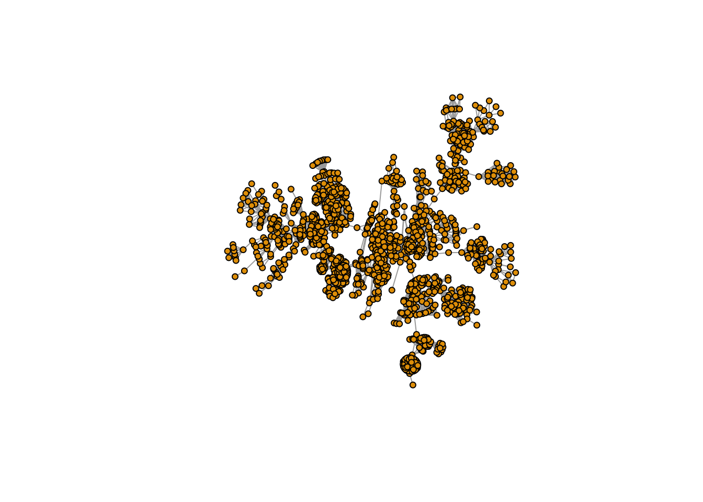
We can also use network reduction algorithms to locate the “backbone” of a graph. One of these is called “disparity filter” and it uses a k-core decomposition routine to locate a densely connnected portion of the graph. Here. we use the disparity_filter function from skynet.
#' Disparity Filter for Weighted Graphs (Serrano et al. 2009)
#'
#' @param g A weighted igraph object (undirected or directed)
#' @param alpha Significance level (default = 0.05)
#' @return An igraph subgraph containing edges that pass the disparity filter
disparity_filter <- function(g, alpha = 0.05) {
if (is.null(E(g)$weight)) stop("Graph must have edge weights")
g <- as.undirected(g, mode = "each") # handle directed edges symmetrically
# compute node strength and degree
s <- strength(g, mode = "all", weights = E(g)$weight)
k <- degree(g, mode = "all")
# edge list
el <- as_data_frame(g, what = "edges")
# For each edge, compute normalized weight p_ij = w_ij / s_i
p_ij <- el$weight / s[el$from]
p_ji <- el$weight / s[el$to]
# compute alpha_ij and alpha_ji (significance levels)
alpha_ij <- 1 - (1 - p_ij)^(k[el$from] - 1)
alpha_ji <- 1 - (1 - p_ji)^(k[el$to] - 1)
# keep edges significant from either end
el$significant <- (alpha_ij < alpha | alpha_ji < alpha)
# create backbone
g_backbone <- subgraph.edges(g, E(g)[which(el$significant)], delete.vertices = FALSE)
return(g_backbone)
}
aclust <- clusters(ag)
csize <- table(table(aclust$membership))
# Grabbing just the largest connected component
alcc <- induced.subgraph(ag, V(ag)[which(aclust$membership == which.max(aclust$csize))])
alcc <- simplify(alcc, remove.multiple=F) # removing loops
bg <- disparity_filter(alcc, alpha=.4)Warning: `as.undirected()` was deprecated in igraph 2.1.0.
ℹ Please use `as_undirected()` instead.Warning: `subgraph.edges()` was deprecated in igraph 2.1.0.
ℹ Please use `subgraph_from_edges()` instead.bclust <- components(bg)
bglcc <- induced.subgraph(bg, V(bg)[which(bclust$membership == which.max(bclust$csize))])
bglcc <- simplify(bglcc, remove.multiple=F) # removing loops
plot(bglcc,vertex.size=4, vertex.label=NA, edge.arrow.size=.01, layout=layout_with_kk)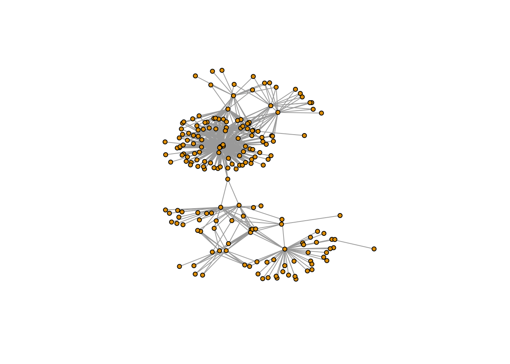
We can come up with clever ways of displaying the backbone within the broader network and as its own slice.